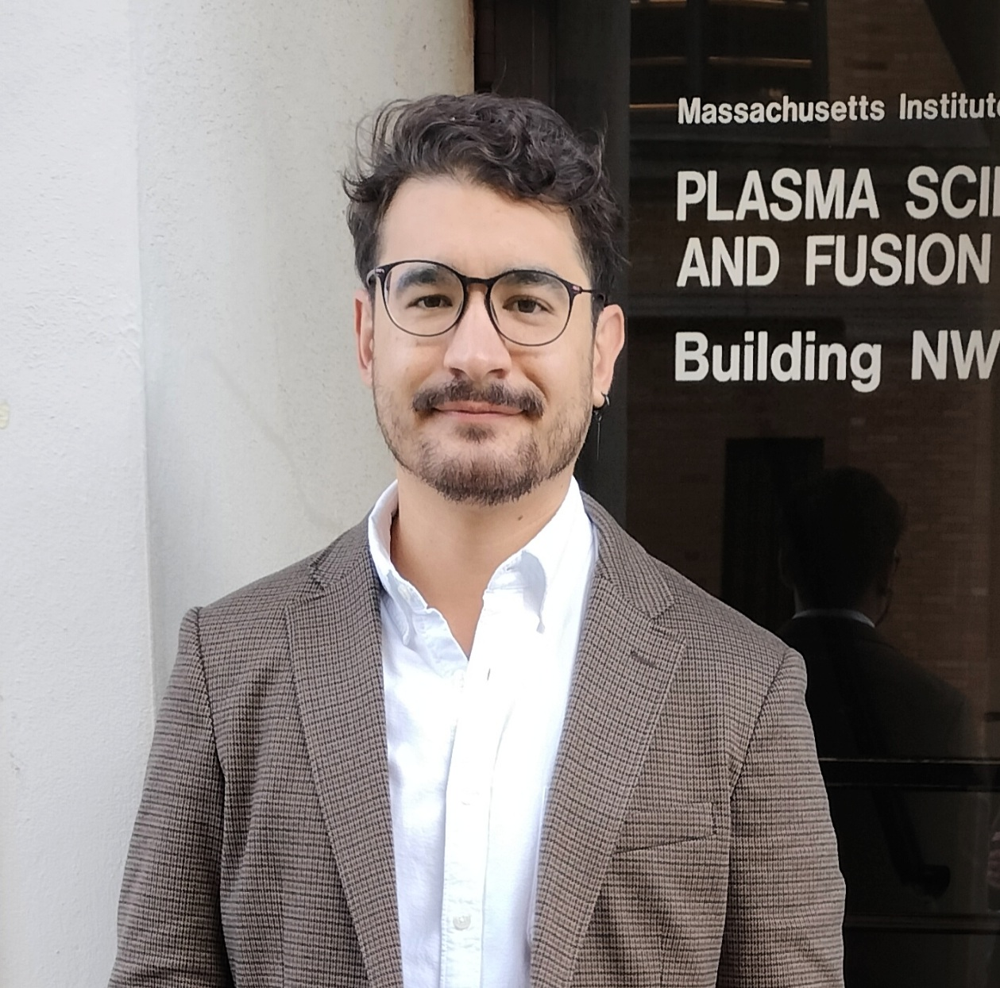

National Ignition Facility & Photon Science,
Lawrence Livermore National Laboratory,
7000 East Avenue,
Livermore, California 94550, USA.
High Energy Density Division
Plasma Science and Fusion Center,
Massachusetts Institute of Technology,
167 Albany St,
Cambridge, Massachusetts 02139, USA.
I am also an Academic Visitor in Plasma Physics at Imperial College London, UK.
Links:
Lawrence Fellows,
Imperial,
ORCID,
ResearchGate,
LinkedIn
E-mail: valenzuelavi1 at llnl.gov, valenz.vicente at gmail.com, v.valenzuela at princeton.edu (discontinued from August 2026)
I am a plasma physicist with broad interests in laboratory astrophysics and astrophysical theory.
My research develops and uses pulsed-power and laser-driven platforms, supported by laser, self-emission,
and particle diagnostics, together with analytic theory and numerical simulations, to study fundamental
processes relevant to astrophysical plasmas. You can find a list of my publications below.
Since moving to Livermore I have become interested about fundamental processes relevant to inertial confinement
fusion, most prominently cross-beam energy transfer and thermonuclear burn.
PUBLICATIONS (updated 2nd of June 2026). You can check out our latest preprints here. (see also Google Scholar). My PhD thesis can be found here (beware of the many typos).
RESEARCH -- If you are interested at undergraduate or graduate summer opportunities at LLNL or MIT, please reach out. Foreign nationals coming to LLNL need to go through extra paperwork, so the deadline for internships is earlier than publicly posted.
TEAM AND COLLABORATORS
Graduate students
These are informal (yet fruitful) collaborations, unless stated otherwise.
IN THE NEWS
Laboratory for Laser Energetics,
OMEGA 60-Beam Laser System Helps Shed Light onto Black Hole Accretion Disks, 2024.
American Physical Society, Division of Plasma Physics,
Closer to the Horizon: Laser and Pulsed-Power Experiments Emulate Black Hole Accretion Disks, 2024.
Scientific American,
Supermassive Black Hole Feeding Frenzies May Explain Blinking Quasars, 2023.
Imperial College London,
Shining ring around black holes recreated in the lab, 2023.
Tendencias 21,
Se puede observar lo que pasa en el universo sin salir de casa, 2023.
Short bio
Vicente is a Lawrence Postdoctoral Fellow at Lawrence Livermore National Laboratory and Visting Scientist at MIT
where he investigates magnetized rotating plasma flows. He graduated with a PhD in Plasma Physics from Imperial
College London, after which he moved to Princeton University as a postdoc in Astrophysical Sciences where he studied
particle heating in magnetic reconnection and collisionless shocks.